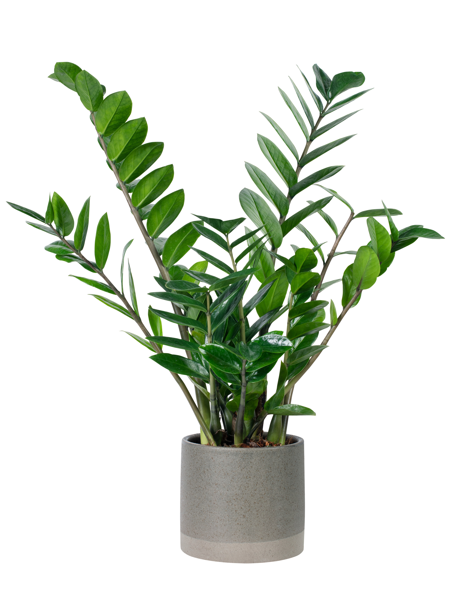
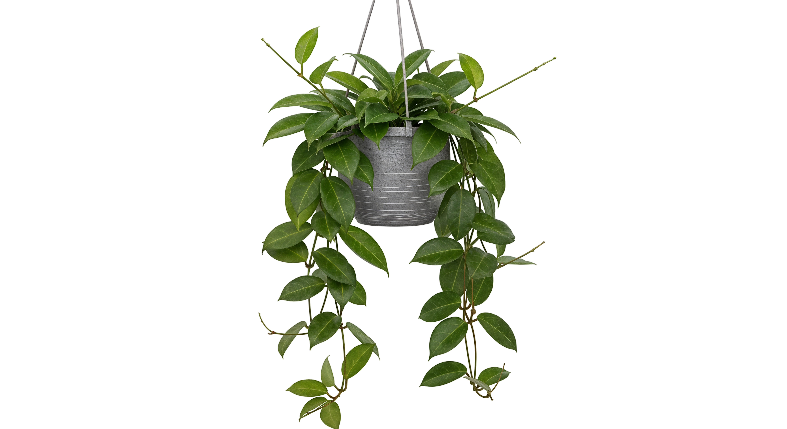
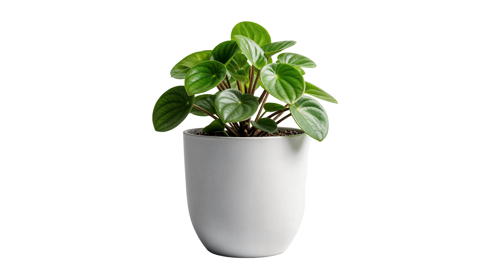
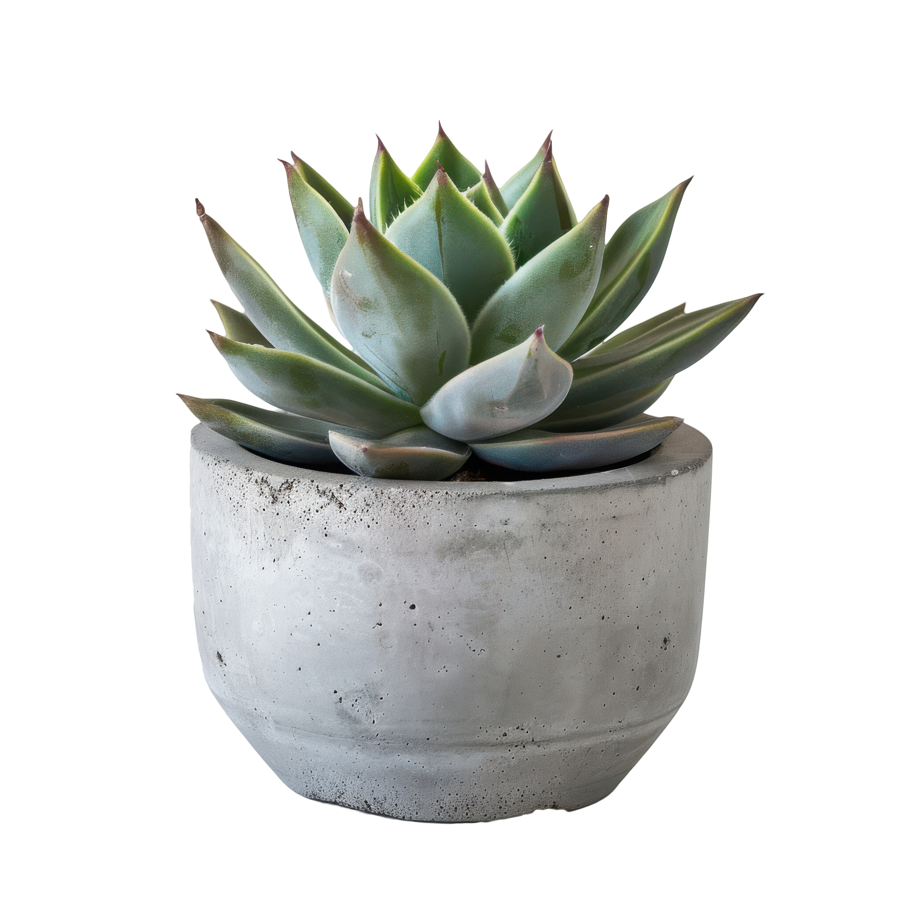

Low Light Pack
Perfect for north-facing rooms or offices with minimal sunlight. These plants are low-maintenance and thrive in shade.
- ZZ Plant — thrives in low light and dry soil
- Snake Plant — handles shade and missed waterings
- Cast Iron Plant — slow grower, great for darker corners

Bright Indirect Pack
Best for east or west windows. These plants love bright light but prefer it filtered through sheer curtains or indirect sun.
- Pothos (Epipremnum aureum) — fast grower that trails or climbs easily
- Heartleaf Philodendron (Philodendron hederaceum) — forgiving and adaptable
- Spider Plant (Chlorophytum comosum) — handles bright rooms and produces baby “spiderettes”

Pet-Safe Pack
Great for homes with cats or dogs. These plants are non-toxic and still beautiful additions to your space.
- Parlor Palm (Chamaedorea elegans) — soft fronds and slow growth
- Peperomia (various types) — compact with many leaf textures
- Calathea (Prayer Plant family) — colorful patterns and non-toxic to pets

Small Space Pack
Designed for apartments and dorms. These compact plants fit easily on desks, shelves, or narrow ledges.
- Succulent Mix — small rosettes that need little water or soil depth
- Pilea peperomioides (Chinese Money Plant) — upright, neat shape, easy to propagate
- Mini Snake Plant (Sansevieria trifasciata ‘Hahnii’) — short version of the classic, stays under 8 inches